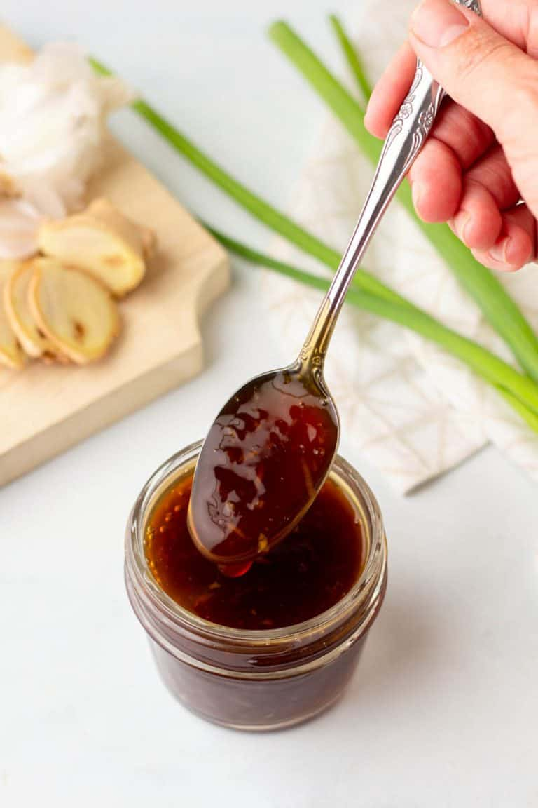

Teriyaki Sauce

Description
A sweet and savoury sauce used for marinating, stir-fry, or dipping!
Ingredients
- 1 part soy sauce
- 1 part mirin
- 1 part cooking sake
- Optional: sugar to taste
- Optional: cornstarch (to thicken)
Steps
- In a small pot or saucepan, mix soy sauce, mirin, cooking sake and sugar. (optional)
- If a thicker sauce is desired, add cornstarch. (optional)
- Turn heat up to medium, stirring occasionally to prevent it from sticking to the pan.
- Once sauce starts to thicken, remove from heat.